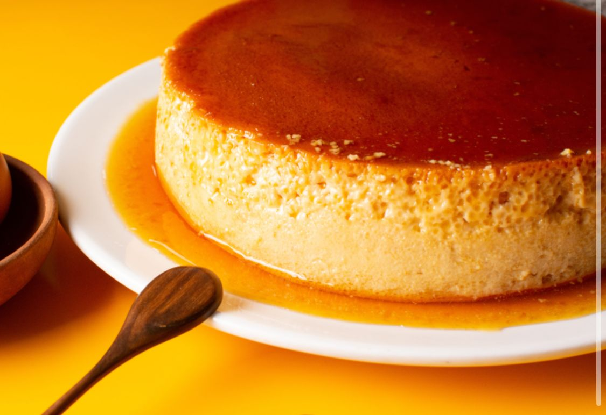

POSTRE QUESILLO VENEZOLANO
Instructivo

ingredientes:
- azucar 1/2 taza
- huevos 5
- leche completa liquida 275ml
- leche condensada 1 lata
- vainilla 1 cucharada
- agua 1/4 de taza
INSTRUCTIVO DE POSTRE DE QUESILLO VENEZOLANO
Pasos
- hervir el agua y el azucar hasta caramelizar
- colocar esta mezcla en el molde y guardar hasta enfriar
- mezcla del quesillo:
- colocar en la licuadora el resto de los ingrediente por 2 minutos
- vertir la mezcla en el molde caramelizado
- cocinar en baño de maria por 30 minutos bien tapado
- dejar enfria y desmoldar